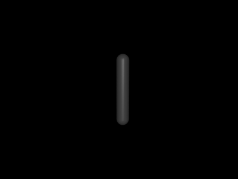
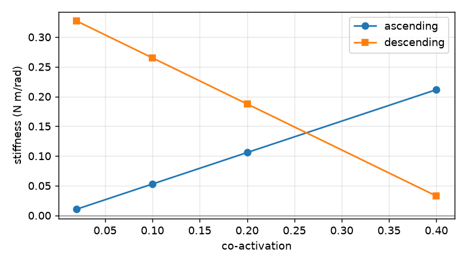
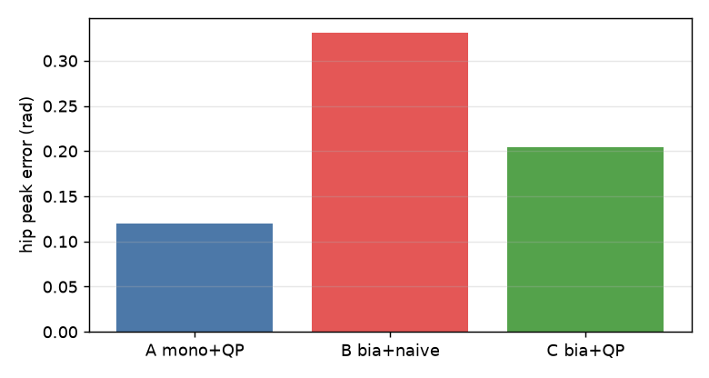
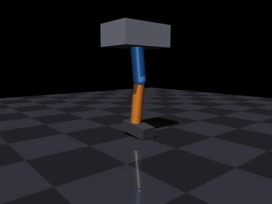
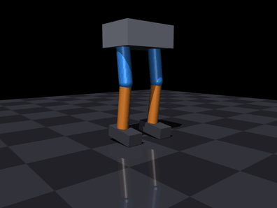

肌肉驱动的下肢关节与步态
本页不依赖 ROS，全部指标由 python3 main.py bench 在 Ubuntu 22.04.5 + Python 3.10 + MuJoCo 3.16.0 下复现。
本页用一个模块串起六级递进实验：单条肌肉 → 拮抗肌对 → 共激活刚度 → 双关节耦合 → 负重站立 → 原地踏步。与仓库已有模块的关系是：
| 已有模块 | 本模块的差异 |
|---|---|
| 肌肉驱动的关节控制 | 那个是 1 自由度、纯 Python、不负重；本模块有 MuJoCo 刚体动力学、多关节、承重 |
| MuJoCo 肌肉骨骼灵巧手 | 那个是手，不负重；本模块是腿，要撑住体重 |
| MuJoCo 肌肉骨骼人键盘遥操作 | 那个是整机 13 自由度行走/踢腿/蹲起；本模块是分级验证平台，L4 专门分析双关节肌耦合 |
| 人形机器人系列（电机驱动） | 那些用理想力矩源；本模块控制量是激活度 \(a \in [0,1]\)，可作对照 |
1 为什么是肌肉，而不是电机
电机可以直接给力矩，可正可负；肌肉只能收缩，控制量是激活度，且出力随长度与速度变化。 这带来三个电机模型里不存在的现象：
- 反向运动必须靠拮抗肌：一块肌肉只能拉，不能推；
- 力会饱和：能出的力矩随构型与速度变化，不是常数；
- 共激活可调刚度：同样的关节角，可以用"低激活、软"或"高激活、硬"实现。
前两条让控制变难，第三条是肌肉相对电机的独特价值——也是本模块 L3 要量化的东西。
2 模型与实现
2.1 分工
MuJoCo 只负责刚体动力学、关节限位与地面接触；肌肉模型用 Python 实现，肌力经
qfrc_applied 施加。这样肌肉部分完全可单元测试，也避免依赖 MuJoCo 内置 muscle
执行器的归一化细节（其 lengthrange 与缠绕腱配合时会把力推到非物理区间）。
2.2 Hill 肌肉模型
激活动力学为一阶滞后，且激活快于放松：
被动力只在 \(\tilde l>1\) 时出现，是下降段唯一的稳定来源（见 3.3 节）。
2.3 单关节阶段的肌肉几何
单关节用解析矩臂，肌肉长度与关节角线性相关，便于手算复核：
于是关节刚度有闭式解，可与数值结果逐项对照：
3 六级实验
3.1 L1 单条肌肉：能不能驱动关节
激活在 0.4 s 从 0.05 跳到 0.30、1.0 s 撤回 0.05。腿被拉起后靠重力自然落回。
| 指标 | 数值 |
|---|---|
| 峰值关节角 | 0.828 rad |
| 终止角 | 0.190 rad |
| 峰值肌力 | 32.2 N |

3.2 L2 拮抗肌对 + PD：能不能控到目标
期望力矩按符号分配给屈/伸肌，对侧维持 0.02 共激活。
| 目标 (rad) | 末态 (rad) | 峰值激活 |
|---|---|---|
| 0.00 | 0.036 | 0.11 |
| +0.30 | 0.277 | 0.75 |
| −0.30 | −0.220 | 0.75 |
纯 PD 有稳态 droop（末态残差 0.036 / 0.023 / 0.08 rad，即 0.02–0.08 rad），加积分或重力前馈可进一步收敛。
3.3 L3 共激活：肌肉到底多出了什么
固定激活度、零速度，直接对 \(\tau(\theta)\) 求导得到刚度（准静态，避开动力学瞬态）：
| 共激活 | 上升段 k (N·m/rad) | 下降段 k (N·m/rad) |
|---|---|---|
| 0.02 | 0.011 | 0.327 |
| 0.10 | 0.053 | 0.265 |
| 0.20 | 0.106 | 0.188 |
| 0.40 | 0.212 | 0.033 |
数值解与解析式在四位小数上完全一致。结论：
- 上升段（\(l_{opt}>l_0\)）：共激活越大，刚度越大，但能耗与稳态误差同步上升；
- 下降段（\(l_{opt}<l_0\)）：共激活反而降低刚度，稳定性完全依靠被动力。
所以"共激活提高刚度"这句话只在上升段成立——这是本模块最重要的一条结论。

3.4 L4 双关节肌：按关节分配为什么会失效
加入跨髋膝的腘绳肌（同时伸髋、屈膝），并让它成为唯一的屈膝肌。 任务：髋保持 0，膝屈曲到 0.9 rad。
| 模型 | 髋峰值误差 (rad) | 激活代价 |
|---|---|---|
| A 单关节版（纯屈膝肌，解剖上不存在） | 0.120 | 0.012 |
| B 双关节版 + 朴素分配 | 0.331 | 0.012 |
| C 双关节版 + 联合 QP | 0.204 | 0.023 |
朴素分配把屈膝的力矩串到了髋上，误差是联合求解的 1.6 倍；联合 QP 用髋屈肌抵消 耦合，代价是激活增加约一倍。这就是双关节肌的代价，也是电机模型里看不到的问题。

3.5 L5 单腿负重站立
骨盆挂在两个滑轨上（水平允许屈膝时后移、竖直承重），相当于体重支撑架。 100% 重力，微蹲姿态：
| 指标 | 数值 |
|---|---|
| 骨盆高度 | −0.015 ± 0.000 m |
| 膝关节角 | 0.21 rad |
| 末态激活 | 0.236 |
注意：必须做重力前馈（qfrc_bias），纯 PD 在稳态误差为零时输出为零，腿会直接
塌到关节限位。

3.6 L6 双腿原地踏步
相位 1.2 s 一个周期，左右腿各摆动 0.6 s；35% 体重支撑。
| 指标 | 数值 |
|---|---|
| 骨盆高度 | +0.007 ± 0.000 m |
| 抬脚幅度 | 0.182 m |
| 末态激活 | 0.372 |
重力前馈按每条腿自身子树计算（不再对双腿做均摊），因此 L6 的抬脚幅度与峰值激活与早期版本略有差异。

4 复现
cd src/musculoskeletal/mujoco_muscle_leg_gait
python3 main.py check
python3 main.py bench --out out # 复现 3.1-3.6 的全部数字
python3 main.py gif --out gif # 复现本页动图
python3 -m unittest discover -s tests -v
gif子命令需要图形环境。远程或无显示服务器时先设置MUJOCO_GL=egl（或osmesa），否则会报an OpenGL platform library has not been loaded；bench与单元测试不受影响。
5 已知限制
- L6 不是自由行走：骨盆受滑轨约束、无躯干俯仰与重心转移控制，35% 重力是刻意 简化。真正的双足行走需要自由基座 + 平衡控制器。
- 单关节用解析矩臂：真实肌肉的力臂由肌腱缠绕几何决定并随构型变化。
- 参数为缩放模型：总质量约 11 kg、
F_max=600 N，不对应具体人体。 - 未接入 ROS 话题：
launch只是把main.py包成 ROS 2 启动入口，尚未发布 关节状态或订阅外部指令。 - 未做 sim2real：全部结果来自 MuJoCo，未在实机或 AirSim/Unreal 中验证。
6 参考
- A. V. Hill, The heat of shortening and the dynamic constants of muscle, 1938
- F. E. Zajac, Muscle and tendon: properties, models, scaling, and application to biomechanics and motor control, 1989
- D. G. Thelen, Adjustment of muscle mechanics model parameters to simulate dynamic contractions in older adults, 2003